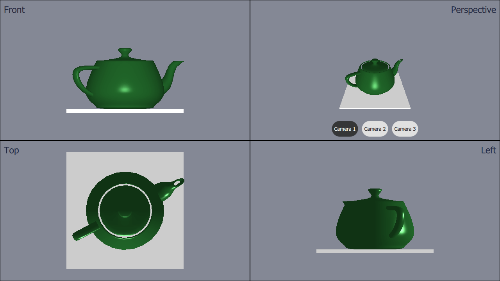

Qt Quick 3D - View3D Example
Demonstrates the use of View3D to show a scene from multiple cameras.

This example demonstrates using four separate View3Ds with different cameras in an application.
Defining the Cameras
First we define the cameras. We're going to define several different cameras, even though we will only add 4 views. We're doing this because we want to be able to switch the camera in one of the views.
The cameras have to be defined inside the root Node. This is how the cameras are defined:
Node { id: standAloneScene ... // The predefined cameras. They have to be part of the scene, i.e. inside the root node. // Animated perspective camera Node { PerspectiveCamera { id: cameraPerspectiveOne z: 600 } PropertyAnimation on eulerRotation.x { loops: Animation.Infinite duration: 5000 to: -360 from: 0 } } // Stationary perspective camera PerspectiveCamera { id: cameraPerspectiveTwo z: 600 } ... // Stationary orthographic camera viewing from left OrthographicCamera { id: cameraOrthographicLeft x: -600 eulerRotation.y: -90 } }
Adding the Views
After defining the cameras we can add the views. We divide the screen to four parts, and add views one-by-one like this:
// The views Rectangle { id: topLeft anchors.top: parent.top anchors.left: parent.left width: parent.width * 0.5 height: parent.height * 0.5 color: "#848895" border.color: "black" View3D { id: topLeftView anchors.fill: parent importScene: standAloneScene camera: cameraOrthographicFront } Label { text: "Front" anchors.top: parent.top anchors.left: parent.left anchors.margins: 10 color: "#222840" font.pointSize: 14 } } ...
The top-right view has three buttons in it. The buttons can be used to switch the camera used in that view on the fly. The switching is done just by settings the camera property:
RoundButton { text: "Camera 1" highlighted: topRightView.camera == cameraPerspectiveOne onClicked: { topRightView.camera = cameraPerspectiveOne } } ...
Files: